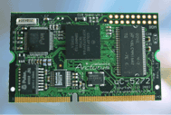

Welcome to the world of Embedded Linux!
This page is being served by Arcturus Networks' uCdimm 5272 running uClinux
uClinux /ju:si:`linuks/ 1.n. Microcontroller Linux; Embedded microcontroller operating system. 2.n. An embedded soft real time kernel (see also POSIX.4) 3.n. Embedded Linux internet/intranet development platform. 4. synonym for the successful rapid development of embedded system applications. |
Information/configuration pages for this dimm

For more information on the uClinux operating system
please visit the http://www.ucdimm.com
and
http://www.uclinux.org web sites.